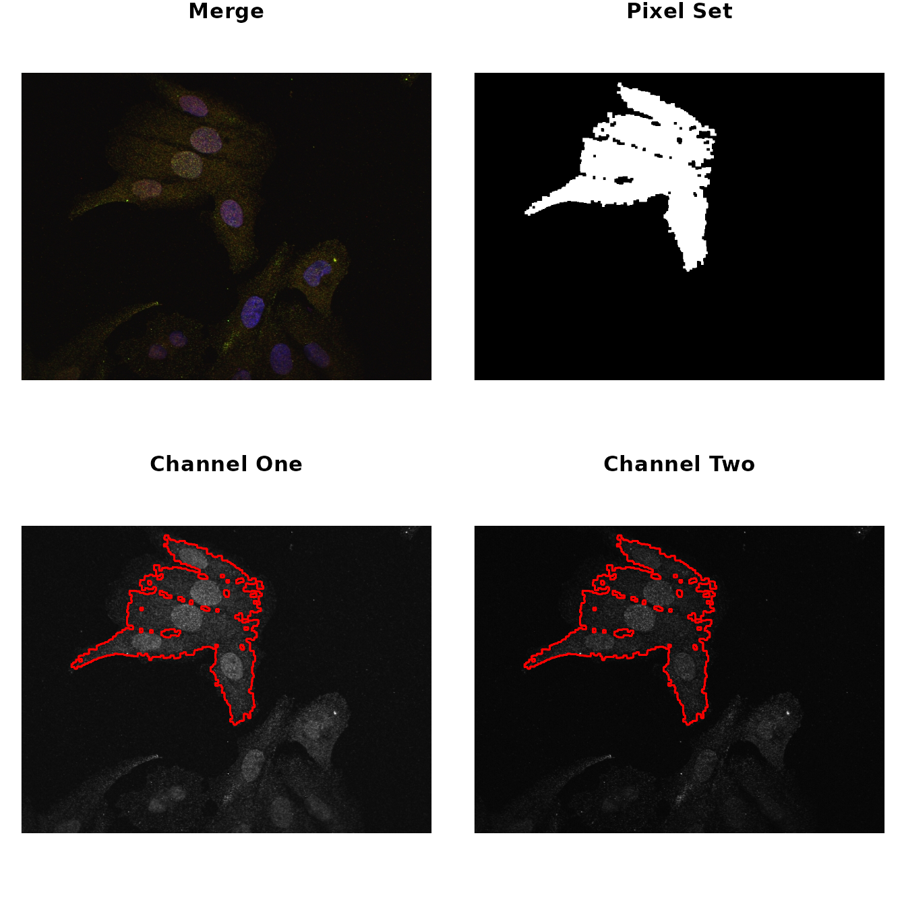
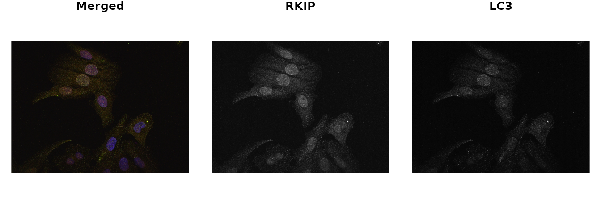
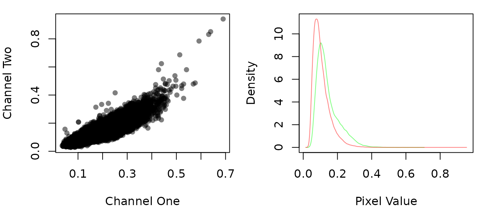
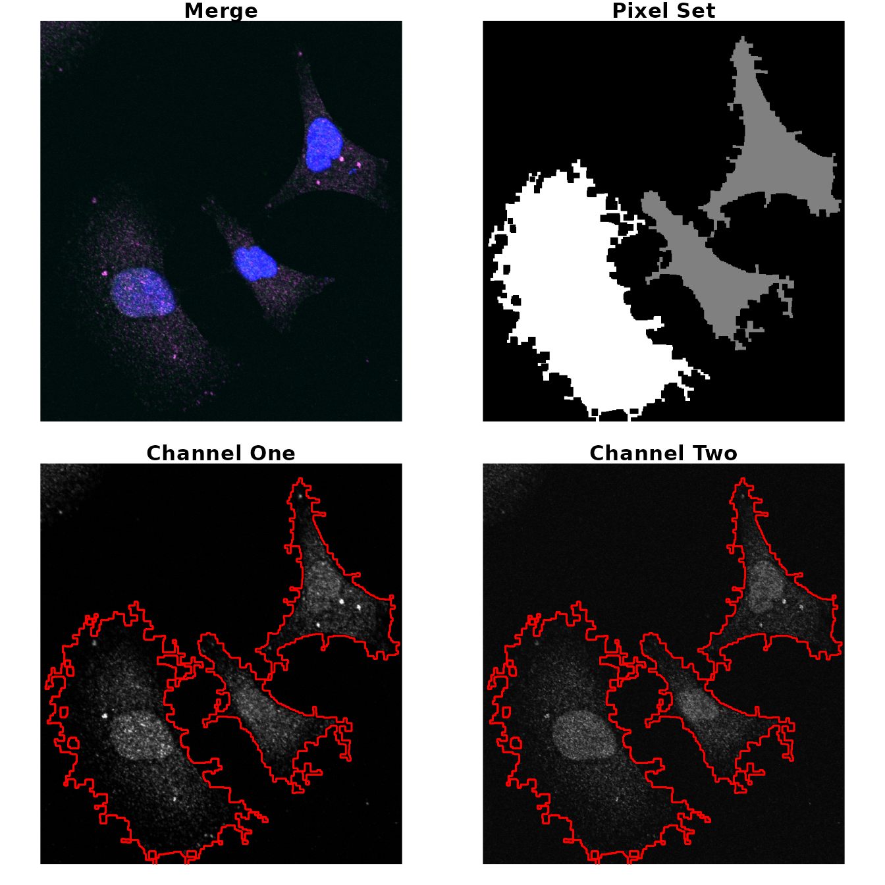
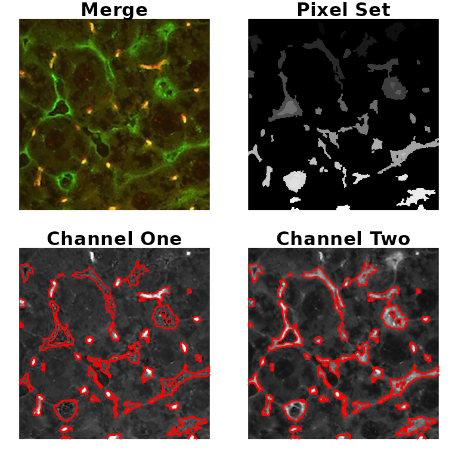
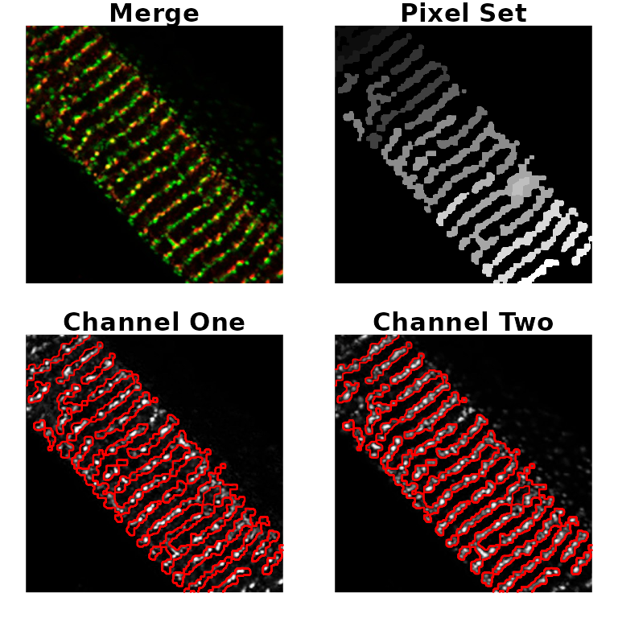

Using colocr
An R package for conducting co-localization analysis
Mahmoud Ahmed
2024-02-29
Source:vignettes/using_colocr.Rmd
using_colocr.RmdOverview
A few R packages are available for conducting image analysis, which is a very wide topic. As a result, some of us might feel at a loss when all they want to do is a simple co-localization calculations on a small number of microscopy images. This package provides a simple straight forward workflow for loading images, choosing regions of interest (ROIs) and calculating co-localization statistics. Included in the package, is a shiny app that can be invoked locally to interactively select the regions of interest in a semi-automatic way. The package is based on the R package imager.
Getting started
To get started, load the required packages and the images. The images below are from DU145 cell line and were stained for two proteins; RKIP and LC3. Then, apply the appropriate parameters for choosing the regions of interest using the roi_select. Finally, check the appropriateness of the parameters by highlighting the ROIs on the image.
# load libraries
library(colocr)
# load images
fl <- system.file('extdata', 'Image0001_.jpg', package = 'colocr')
img <- image_load(fl)
# select ROI and show the results
par(mfrow = c(2,2), mar = rep(1, 4))
img %>%
roi_select(threshold = 90) %>%
roi_show()
The same can be achieved interactively using an accompanying shiny app. To launch the app run.
The rest of the analysis depends on the particular kind of images. Now, colocr implements two simple co-localization statistics; Pearson’s Coefficient Correlation (PCC) and the Manders Overlap Coefficient (MOC).
To apply both measures of correlation, we first get the pixel intensities and call roi_test on the merge image.
# calculate co-localization statistics
img %>%
roi_select(threshold = 90) %>%
roi_test(type = 'both')
#> pcc moc
#> 1 0.9049954 0.9833916The same analysis and more can be conducted using a web interface for the package available here
Detailed Example
The following example uses images from the DU145 prostate cancer cell line. In this experiment, the cell line was treated with probes for two proteins RKIP and LC3. The aim of this experiment is to determine, how much of the two proteins are co-localized or co-distributed in the particular cell line.
# load required libraries
library(colocr)
# load images
img <- image_load(system.file('extdata', 'Image0001_.jpg', package = 'colocr')) # merge
img1 <- imager::channel(img, 1) # red
img2 <- imager::channel(img, 2) # green
# show images
par(mfrow = c(1,3), mar = rep(1,4))
plot(img, axes = FALSE, main = 'Merged')
plot(img1, axes = FALSE, main = 'RKIP')
plot(img2, axes = FALSE, main = 'LC3')
The colocr package provides a straight forward workflow for determining the amount of co-localization. This workflow consists of two steps only:
- Choosing regions of interest (ROI)
- Calculating the correlation between the pixel intensities
The first step can be achieved by calling roi_select on the image. In addition, roi_show can be used to visualize the regions that were selected to make sure they match the expectations. Similarly, roi_check can be used to visualize the pixel intensities of the selected regions. The second step is calling roi_test to calculate the co-localization statistics.
The calls to these functions can be piped using %>% to reduce the amount of typing and make the code more readable.

Choosing ROIs
The function roi_select relies on different algorithms from the imager package. However, using the functions to select the ROIs doesn’t require any background knowledge in the workings of the algorithms and can be done through trying different parameters and choosing the most appropriate ones. Typically, one wants to select the regions of the image occupied by a cell or a group of cells. However, the package can also be used to select certain areas/structures within the cell if they are distinct enough. By default, the largest contiguous region of the image is selected, more regions can be added using the argument n. The details of the other inputs are documented in the function help page ?roi_select.
# select regions of interest
img_rois <- img %>%
roi_select(threshold = 90)This function returns cimg object containing the original input image and an added attribute called label which indicates the selected regions. label is a vector of integers; with 0 indicating the non-selected pixels and 1 for the selected regions. When the argument n is provided to roi_select, 1 is replaced by integer labels for each of the selected regions separately.
# class of the returned object
class(img); class(img_rois)
#> [1] "cimg" "imager_array" "numeric"
#> [1] "cimg" "imager_array" "numeric"
# name of added attribut
names(attributes(img)); names(attributes(img_rois))
#> [1] "class" "dim"
#> [1] "class" "dim" "label"
# str of labels
label <- attr(img_rois, 'label')
str(label)
#> num [1:480000] 0 0 0 0 0 0 0 0 0 0 ...
# unique labels
unique(label)
#> [1] 0 1Now, to make sure these parameters are appropriately encompassing the ROIs, call the roi_show to visualize side by side the original merge picture, a low resolution picture of the ROI and the images from the two different channels highlighted by the ROIs.
Both the co-localization statistics implemented in this package quantify different aspects of the linear trend between the pixel intensities from the two channels of the image. Therefore, it is useful to visualize this trend and the distribution of the intensities to make sure the analysis is appropriate.
# show the scatter and density of the pixel values
par(mfrow=c(1,2), mar = c(4,4,1,1))
img_rois %>%
roi_check()
Arguably, selecting the regions of interest is the most time consuming step in this kind of analysis. Usually, one has to do this selection by hand when using image analysis software such as imageJ. This package only semi-automates this step, but still relies on the user’s judgment on which parameters to use and whether or not the selected ROIs are appropriate. To make life easier, the package provides a simple shiny app to interactively determine these parameters and use it in the rest of the workflow. To launch the app run the following
# run the shiny app
colocr_app()And here is a screen shot from the app after applying the same parameters used previously.

Although this app was designed to be invoked from within the package to help the users to choose the selection parameters interactively, it’s a stand alone app and can run the same analysis described here. The app can be accessed from the web here
Calculating Correlation Statistics
The two different statistics implemented in this package are the PCC and SCC. The formal description and the rational for using them is detailed elsewhere. Invoking the test is a one function call on the selected regions of interest.
# Calculate the co-localization statistics
tst <- img_rois %>%
roi_test(type = 'both')
tst
#> pcc moc
#> 1 0.9049954 0.9833916roi_test returns a data.frame with a column for each of the desired statistics. When n is used in the selection of the regions of interest, a separate row is returned for each region.
# str of the roi_test output
str(tst)
#> 'data.frame': 1 obs. of 2 variables:
#> $ pcc: num 0.905
#> $ moc: num 0.983Selecting a multiple regions in an image
In this example, we want to select the all cells as regions of interest and make sure no background is included in the selected region. To do that, we use the different arguments in roi_select.
# load image
img2 <- image_load(system.file('extdata', 'Image0003_.jpg', package = 'colocr')) # merge
# select ROI and show the results
par(mfrow = c(2,2), mar = rep(1, 4))
img2 %>%
roi_select(threshold = 85,
shrink = 10,
clean = 10,
n = 3) %>%
roi_show()
Analyzing a collection of images at once
To process a collection of images at once, we first make a list of the image objects and pass it to the roi_select. Other arguments can be provided as a single value to be applied to all images or specific values for each image.
# make a list of images
fls <- c(system.file('extdata', 'Image0001_.jpg', package = 'colocr'),
system.file('extdata', 'Image0003_.jpg', package = 'colocr'))
image_list <- image_load(fls)
# call roi_select on multiple images
image_list %>%
roi_select(threshold = 90) %>%
roi_test()
#> [[1]]
#> pcc
#> 1 0.9049954
#>
#> [[2]]
#> pcc
#> 1 0.8505968
# make threshold input list
thresholds <- c(90, 95)
# call roi_select on multiple images and specific thresholds for each
image_list %>%
roi_select(threshold = thresholds) %>%
roi_test()
#> [[1]]
#> pcc
#> 1 0.9049954
#>
#> [[2]]
#> pcc
#> 1 0.762798The same applies of the other two functions; roi_show and roi_check. When a list of images is provided, they return same set of plots for each of the images.
Reproducing the shiny app output
The interactive shiny app can be useful when trying the analysis for the first time. Or when choosing the appropriate input values to select the regions of interest. To make things easier for the users, we enabled exporting the input and the output from the shiny app. These can be used to report an analysis directly, or to reproduce the results using R code.
This section describes how to use the exported input and output tables from the app and using them to reproduce the same results. First, we start by loading inputs_19.05.23_05.55.22.csv which is the output of an analysis of two images performed by in the shiny app. Second, we load the inputs_18.09.02_05.15.08.csv which contains the input parameters used in that analysis. Then, we call roi_select and roi_test using these inputs. Finally, we compare the outputs form the app and the script.
# show the output
stats <- read.csv(system.file('colocr_app', 'stats_19.05.23_05.55.21.csv', package = 'colocr'))
stats
#> name image roi pcc moc
#> 1 LC3 Image0001_.jpg 1 0.9119880 0.9834586
#> 2 LC3 Image0001_.jpg 2 0.8880337 0.9789110
#> 3 LC3 Image0003_.jpg 1 0.8445185 0.9448636
#> 4 LC3 Image0003_.jpg 2 0.8722429 0.9338876
#> 5 LC3 Image0003_.jpg 3 0.8537054 0.9550992
# show the inputs
inputs <- read.csv(system.file('colocr_app', 'inputs_19.05.23_05.55.22.csv', package = 'colocr'), stringsAsFactors = FALSE)
inputs
#> image threshold shrink grow fill clean tolerance roi_num
#> 1 Image0001_.jpg 90 6 5 8 8 0.1 2
#> 2 Image0003_.jpg 90 8 5 10 10 0.1 3
# read images
fls <- lapply(inputs$image, function(x) {
system.file('extdata', x, package = 'colocr')
})
imgs <- image_load(fls)
# use the app input to the roi_select function
rep_stats <- imgs %>%
roi_select(threshold = inputs$threshold,
shrink = inputs$shrink,
grow = inputs$grow,
fill = inputs$fill,
clean = inputs$clean,
tolerance = inputs$tolerance,
n = inputs$roi_num) %>%
roi_test(type = 'both')
rep_stats
#> [[1]]
#> pcc moc
#> 1 0.9122681 0.9834711
#> 2 0.8881229 0.9789240
#>
#> [[2]]
#> pcc moc
#> 1 0.8445383 0.9448650
#> 2 0.8722704 0.9338842
#> 3 0.8537873 0.9551277Description of the co-localization statistics
The following is a brief discussion of the theory and interpretations of different statistics that we used in this package as a measure of co-localization. For thorough and formal details, check this article by Dunn et al..
PCC
Pearson’s correlation coefficient is the co-variance of the pixel intensity from the two channels. The mean of the intensities is subtracted from each pixel which makes the coefficient independent of the background level.
The PCC is calculated as follows
\[ PCC = \frac{\sum_i{(R_i-\bar R)\times(G_i-\bar G)}}{\sqrt{\sum_i{(R_i-\bar R)^2\times\sum_i(G_i-\bar G)^2}}} \]
Where \(R_i\) and the \(G_i\) is the intensities of the red and green channels and the \(\bar R\) and \(\bar G\) are the average intensities.
The values of PCC are between 1 and -1 for perfect correlations in the positive and negative directions respectively and 0 means no correlation.
MOC
On the other hand, the Manders Overlap Coefficient doesn’t require subtraction of the mean. Therefore, the values are always between 0 and 1. Also, the MOC is independent from signal proportionality.
\[ MOC = \frac{\sum_i{(R_i\times G_i)}}{\sqrt{\sum_i{R_i^2\times\sum_i G_i^2}}} \] Where \(R_i\) and the \(G_i\) is the intensities of the red and green channels.
Colocalization Benchmark Source
The Colocalization Benchmark Source (CBS) is a free collection of downloadable images to test and validate the degree of colocalization of markers in fluorescence microscopy studies. It consists of computer-simulated images with exactly known (pre-defined) values of colocalization ranging from 0% to 90%. They can be downloaded as sets as well as separately.
Here, we used two examples from the CBS to test the results of the analysis using colocr.
# load image
fl1 <- system.file('extdata', 'example1.png', package = 'colocr')
ex1 <- image_load(fl1)
# select and show regions of interest (based on the app)
par(mfrow=c(2,2), mar = rep(1, 4))
ex1 %>%
roi_select(threshold = 90, shrink = 8, n = 50) %>%
roi_show()
# calculate co-localization statistics
# (expected pcc = 0.68, moc = 0.83)
ex1 %>%
roi_select(threshold = 90, shrink = 8, n = 50) %>%
roi_test(type = 'both') %>%
colMeans()
#> pcc moc
#> 0.6911481 0.9778421
# load image
fl3 <- system.file('extdata', 'example3.png', package = 'colocr')
ex3 <- image_load(fl3)
# select and show regioins of interest (based on the app)
par(mfrow=c(2,2), mar = rep(1, 4))
ex3 %>%
roi_select(threshold = 90, shrink = 9, grow = 1, fill = 10, clean = 10, n = 20) %>%
roi_show()
Acknowledgement
- The vignette images from Lai Huyen Trang
- The test examples from Colocalization Benchmark Source (CBS)
- The implementation of the co-localization statistics from Dunn et al.